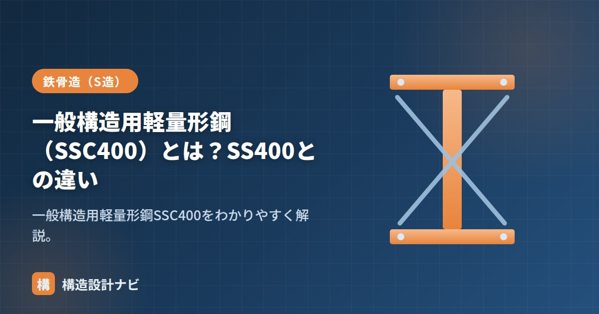

一般構造用軽量形鋼（SSC400）とは？SS400との違い

SSC400とは、軽量形鋼に使われる材質の記号で、「一般構造用軽量形鋼」を表します。薄い鋼板を冷間でロール成形してつくられる形鋼で、鉄骨造の主要部材を補助する二次部材として広く使われています。名前が似ているSS400と混同されがちですが、規格の番号も製法もまったく異なる鋼材なので、記号の意味を正しく理解しておくことが大切です。
- SSC400はJIS G 3350（一般構造用軽量形鋼）で規定される、冷間成形の薄板材。
- SS400（JIS G 3101・熱間圧延）とは規格・製法・板厚・用途が異なる。
- 胴縁・母屋・間柱などの二次部材に使われ、接合はボルト・ビスが基本。
SSC400の規格
SSC400はJIS G 3350（一般構造用軽量形鋼）で規定されています。記号のSSCは Steel Structure Cold（冷間成形）に由来し、数字の400は引張強さ400N/mm²級を表します。薄い鋼板を冷間ロール成形してリップ溝形鋼（Cチャン）や軽量山形鋼などをつくります。熱を加えずに常温でロールを通して曲げ成形するため、断面形状の自由度が高く、薄い板厚でも複雑な断面をつくれるのが特徴です。
SS400との違い
| SS400 | SSC400 | |
|---|---|---|
| 規格 | JIS G 3101（一般構造用圧延鋼材） | JIS G 3350（一般構造用軽量形鋼） |
| 製法 | 熱間圧延（H形鋼・鋼板など） | 薄板の冷間成形（軽量形鋼） |
| 板厚 | 厚いものまで幅広い | 薄い（おおむね1.6〜4.0mm） |
| 主な用途 | 柱・梁などの主要部材 | 胴縁・母屋・間柱などの二次部材 |
引張強さの級（400N/mm²）は同じで材質的には近いですが、SS400は熱間圧延の汎用鋼材、SSC400は薄板を成形した軽量形鋼という違いがあります。名称に「400」がつく点だけを見て同じ材料と誤解しないよう注意しましょう。構造計算上の許容応力度の扱いも、部材種別（主要構造部材か二次部材か）によって考え方が変わってきます。
胴縁などの用途
SSC400の軽量形鋼は、主に次のような二次部材に使われます。
- 胴縁（どうぶち）：外壁材（金属サイディング・ALCなど）を取り付ける下地の横材。
- 母屋（もや）：屋根材（折板など）を受ける部材。
- 間柱（まばしら）：壁を構成する補助的な柱。
これらはいずれも建物の骨組み（柱・梁）そのものを支える主要構造部材ではなく、外装材や屋根材といった仕上げ材を下地として支える役割を担います。軽量で施工性がよく、コストも抑えられるため、鉄骨造の屋根・外壁の下地には欠かせない材料です。
接合方法の注意点
薄板のため溶接には不向きで、接合はボルト・ビスが基本です。主要構造部材ではなく、二次部材に使うのが原則です。
板厚が薄いSSC400に溶接を行うと、入熱によって母材が焼け落ちたり変形したりするリスクが高くなります。実務ではドリルねじやボルト・ナットによる機械的な接合が基本で、母屋や胴縁を主要構造部材（梁など）に取り付ける際も専用の金物（クリップ金物など）を介するのが一般的です。
胴縁や母屋の断面算定書に、SS400の許容応力度をそのまま当てはめた計算書を審査で見かけたことがある。SSC400は薄板の冷間成形材で局部座屈や板厚公差の扱いがSS400とは別物なので、二次部材だからと油断せず記号の意味から確認する癖をつけている。
まとめ
- SSC400は一般構造用軽量形鋼の材質記号。規格はJIS G 3350。
- SS400（熱間圧延・G3101）とは製法・板厚・用途が異なる。
- 胴縁・母屋・間柱などの二次部材に使い、接合はボルト・ビスが基本。
- 薄板ゆえ溶接は避け、金物やビスによる機械的接合を選ぶ。